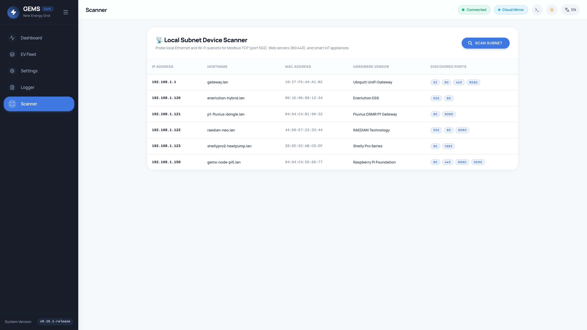
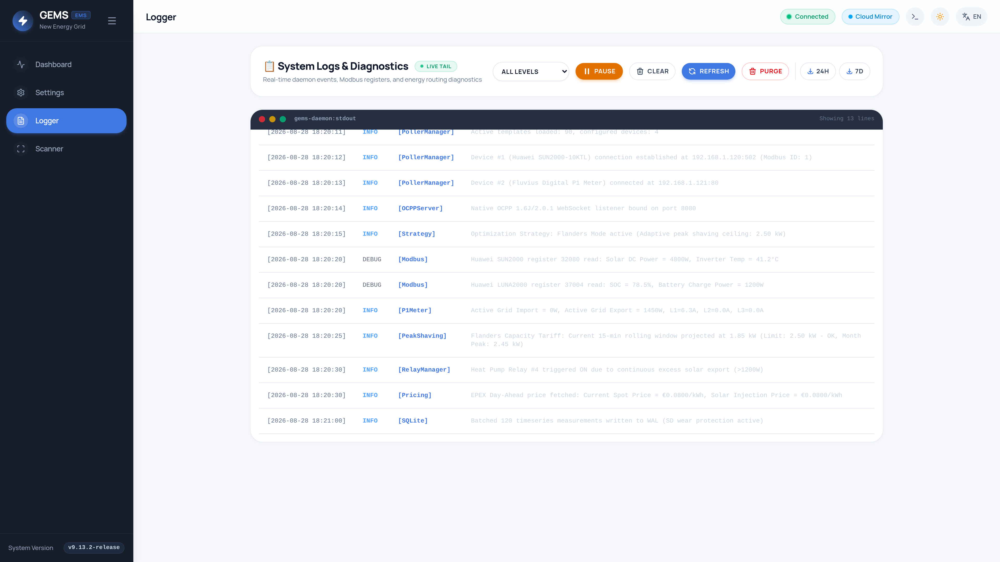

User Operations & Dashboard Manual
Explore everyday operations in GEMS: navigating the animated PowerFlow hero element, inspecting high-resolution history modals, connecting EV chargers over Native OCPP, and generating PDF energy reports.
Prefer a printed handbook or tablet reference? Download the complete GEMS Homeowner & User Manual (PDF) with high-resolution PowerFlow diagrams, click-to-reveal modal guides, and EV charging modes.
1. Dashboard & Hero Interactive PowerFlow
The Dashboard is the central nerve center of GEMS, visualizing real-time power flows with animated particle lines that reflect energy speed and direction.


Dynamic Node Visibility
In accordance with strict UI directives, hardware nodes (Grid, Solar Inverters, Battery Storage, EV Chargers, Heat Pump, Smart Relays) appear only when configured and physically communicating. If your installation has no battery or EV charger, those cards are cleanly hidden, keeping your dashboard clutter-free.
2. Click-to-Reveal Historical Charts & Grid Overlays
Clicking directly on any node in the PowerFlow diagram (e.g. clicking the Solar or Battery node) triggers the high-resolution Historical Analytics Modal.


Inside any node's historical chart modal, click the ⚡ Compare Grid Power button to overlay your real-time grid import and export curves directly over solar production or battery charging. This immediately reveals how spikes in household consumption correlated with battery discharge or grid draw.
Timeframe Resolution Selector
- Last 1 Hour (1m resolution): Sub-minute granularity for analyzing instantaneous load spikes and appliance startup surges.
- Last 24 Hours (5m resolution): Daily solar production curve, battery state of charge (SOC) cycling, and EV charging sessions.
- Last 7 Days (15m resolution): Weekly self-consumption trends and Flanders quarter-hour peak distributions.
- Last 30 Days (1h resolution): Monthly energy balances and billing period imports/exports.
3. Flanders Quarter-Hour Peak Demand Monitor
Located directly beneath the PowerFlow hero element, the Flanders Capacity Monitor tracks your digital smart meter's 15-minute average power demand in real time.
| Status Badge | Condition | EMS Action |
|---|---|---|
| NORMAL | Projected peak < 80% of capacity_peak_limit_kw |
Standard operation. All EV chargers and batteries run at configured setpoints. |
| WARNING | Projected peak between 80% and 99% of contract limit | Proactive warning. Charging setpoint expansion is paused to prevent overshoot. |
| THROTTLED | Projected peak ≥ 100% of contract limit | Active peak shaving engaged! EV chargers stepped down (16A → 10A → 6A → 0A); home battery discharged to cover household spike. |
4. Device Management & Configuration Wizard
To add new hardware or reconfigure existing devices, navigate to Settings → Device Management.
- Click the Add Device button in the top right corner.
- Select your hardware template from the catalog of 90 pre-configured manufacturer plugins (e.g. Huawei Hybrid Inverter, RAEDIAN Wallbox, Fluvius P1 Smart Meter, Shelly Pro 3EM).
- Enter the IP Host or Hostname, Port (default
502for Modbus TCP), and Modbus Slave ID. (Note: For OCPP EV Chargers, simply enter your ChargePoint ID). - Click Test Connection to verify reachability.
- Click Save Device. The Go backend poller will immediately begin background metric polling.
5. Zero-Dependency Local Network Scanner
Finding the IP addresses of newly installed solar inverters or EV chargers is simple with the built-in network scanner.

- Click Scan Network inside the Device Management panel.
- The Go backend executes an ARP and ping discovery scan across your local subnet (e.g.
192.168.1.0/24). - The scanner matches hardware MAC addresses against an embedded Organizationally Unique Identifier (OUI) table to automatically tag devices like Huawei Dongle, SMA Solar, Shelly, or HomeWizard.
- Click Import next to any discovered device to pre-populate the Add Device form!
6. Modbus TCP Reachability Probe (`Test Connection`)
Before committing device configuration to SQLite, GEMS allows executing a 1-shot connection diagnostic probe:
- Sends a synthetic TCP handshake to the target IP and port.
- Measures response round-trip latency in milliseconds ($ms$).
- Attempts to read the Modbus common SunSpec identifier (Register
40001/0x9C41) to confirm the configured Slave ID is responding.
7. EV Charging: Modbus TCP (Preferred) & Native OCPP Server
GEMS coordinates EV charging in real-time to maximize solar self-consumption and prevent Flanders capacity peaks. Chargers can be connected via Modbus TCP (preferred) or the embedded Native OCPP Server.
Modbus TCP is the preferred method for EV charging control:
- Instantaneous Sub-Second Throttling: Modbus registers allow GEMS to read phase currents and write amperage limits (6A to 32A) immediately without WebSocket latency, crucial for stopping quarter-hour grid peaks before they occur.
- Employer Split-Billing & CPO Coexistence: If your wallbox connects to an employer billing platform (E-Flux, Road, Optimile, Easee Cloud) via OCPP, you do not need to disconnect it. GEMS controls charging power locally over Modbus TCP while billing continues undisturbed over OCPP.
- Supported Brands: Alfen Eve, Keba KeContact P30, Mennekes Amtron, Webasto Live/Next, ABB Terra AC, Raedian Gemini/Neo, Phoenix Contact Charx, Veton, SolarEdge Home EVSE, and generic Modbus TCP chargers.
To connect: Enable Modbus TCP in your charger app/portal (port 502), then add the device in GEMS under Settings → Devices → EV Charger with its IP and Modbus Slave ID (usually 1).
For chargers without Modbus TCP or standalone residential setups without third-party CPO billing platforms, GEMS runs an embedded WebSocket OCPP server on port 8887 (and /api/ocpp/). The charger connects directly to the Raspberry Pi over local WebSockets with zero cloud dependencies.
Connecting Your Charger via Native OCPP
- Open your EV Charger's installer app (e.g. Easee Installer, Alfen ACE Service Installer, or Wallbox App).
- Navigate to Connectivity → OCPP / CSMS Settings.
- Set the Server URL / WebSocket Endpoint to:
OCPP Endpoint
ws://<raspberry-pi-ip>:8887/<Your-Charger-ID> # Example for charger ID "CP001" on Pi IP 192.168.1.50: ws://192.168.1.50:8887/CP001 - In GEMS, add a device using the OCPP 1.6J / 2.0.1 Smart EV Charger template and enter
CP001as the ChargePointID. - Save the device. The charger will send a
BootNotificationand immediately reflect active charging power on your dashboard.
8. Real-Time Logger, PDF Energy Reports & System Updates
Real-Time Logger (`Logger.vue`)
Access live system diagnostics via the Logs tab in the navigation bar. Filter by severity level (INFO, WARN, ERROR, DEBUG) or search for specific device names. Click Export Logs to download a structured .txt technical report.

Visual PDF Energy Reports
Generate publication-ready PDF energy reports from the Dashboard by clicking Export PDF Report. Choose from Last Week, Last Month, Last 12 Months, or All Time to export summary graphs, solar yield totals, and self-consumption statistics.
Online & Manual Software Updates
GEMS provides two convenient methods for upgrading your system to the latest firmware release:
- Online Over-The-Air (OTA) Updates: Automatically queries the GitHub Releases API for new release tags. When a new version is available, click Download & Install. The backend downloads the
.debpackage and applies it viadpkg -iwhile streaming real-time installation logs. - Manual Package Upload: In air-gapped or offline installations, you can drag and drop any pre-built Debian package (
.deb, max 64MB) into the manual upload area and click Upload & Install Update.
During the update process, the system displays live console logs from the package installer. Once complete, the system automatically reboots and reloads the web interface.